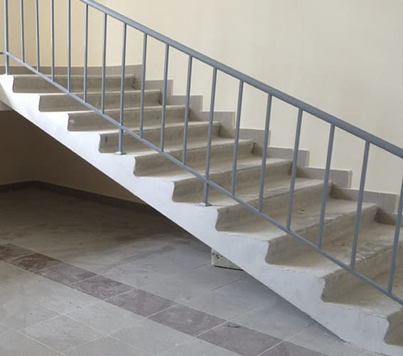

Утренняя смена 5:55 - 14:00
Послеобеденная смена 13:55 - 22:00
Ночная смена 21:55 - 6:00
Утренняя смена 6:00 - 18:00
Ночная смена 18:00 - 6:00
Завтрак - 10 минут
Уборка 5S - 5 минут
Обед - 30 минут
Отклонение: Любое отклонение изделия, материала или оборудования от стандарта. Шум, писк, скрежет, перегревания, чрезмерные вибрации и т.д. В случае выявления отклонения необходимо всегда руководствоваться следующими инструкциями:
-
Остановитьработу или же остановить станок
-
Вызватьсвоего непосредственного начальника и информировать его о данной ситуации
-
Подождатьна получение инструкций от начальника, который примет решение о последующих действиях, или прибытие обслуживающего работника которому необходимо передать информацию, требующую для начала ремонта.
-
КанбанСаморегулирующаяся система регулярного снабжения рабочего места материалом.Сопроводительная карта материала содержит такую информацию, как название, требуемое количество, место погрузки и выгрузки и т.д.
-
КайдзенПрофилактическое техническое обслуживание станков с участием всех работников. С помощью своих чувств человек может определить состояние выбранных частей станка, и тем самым выявить все отклонения от нормы.
-
ТПМПрофилактическое техническое обслуживание станков с участием всех работников.С помощью своих чувств человек может определить состояние выборных частей станка и тем самым выявить все отклонения от нормы.
-
ТПМ нацеливается на:
- Ежедневный контроль
- Регулярную очистку
- Смазывания
-
АндонСветовая или звуковая сигнализация, которая отображает состояние производственного процесса на отдельных рабочих местах линии. Служит для сообщения о проблемы (отклонении).
-
Система 5SРегулярное систематическое поддержание порядка на рабочем месте. Метод, как получить и поддерживать любое рабочее место в организационном порядке и чистоте.
1 отсортируй 2 упорядочи 3 убери 4 стандартизируй 5 соблюдай -
3SТри шага для безопасного выключения станка:
- Выключить главный выключатель
- Проверить, что выключатель действительно выключен
- Проверить, что станок действительно остановился
-
Пока-йокеМеры, которые не позволяют возникновения ошибки, существует только один способ монтажа.
-
ДжидокаАвтоматическая остановка операции (включая предупреждение оператора) в случае ошибки, например, вместо 5 винтов завинчено только 4.
-
1
Исполнять только работу, порученную непосредственным начальником = TEAMLEADER (T/L, мастер) или SETTER (наладчик), в их отсутствие это назначенный работник.
-
2
В случае отклонения соблюдай следующий порядок: 1 - останови работу, 2 - позови начальника, 3 - подожди на инструкции.
-
3
О покидание рабочего места сообщи своему начальнику, чтобы он мог обеспечить замену.
-
4
Не касайся вращающихся и подвижных частей cтанков и инструментов, например, отверток, транспортёров, лифтов.
-
5
Свободные распущенные волосы не должны быть длиннее плеч, в противном случае их нужно собрать – угроза получения травмы при захвате или предъявления претензий. Не носить цепочки и кольца – техника безопасности.
-
6
На рабочем месте не разрешено пользоватся частным мобильным телефоном и носить наушники – использование телефона противоречит трудовому регламенту, а ношение наушников уменьшает восприятие окружения и противоречит технике безопасности.
-
7
Применяй предписанные средства защиты и рабочую одежду, включая идентификационную карту – рабочие одежда состоит из штанов, майки, рубахи и рабочей обуви, на одежде должен быть читаемый логотип фирмы.
-
8
Униформу и обувь иметь должным образом застегнутой и собранной – по причине техники безопасности части одежды не должны свободно висеть.
-
9
При работе не распыляйся и сконцентрируйся на её выполнение.
-
10
Соблюдай правила порядка на рабочем месте 5S – необходимо содержать в чистоте также окружение рабочего места.
-
1
На линиях и на рабочих местах запрещается есть по причине пять 5S, безопасности и качества. Есть только в буфете и зоне отдыха.
-
2
Запрещается входить на линию с открытым напитком, разрешен только закрытый напиток (помещается на рабочем месте на стойку) - Техника безопасности и 5S.
-
3
Каждый, кто находится в ареале DMCZ, должен видимым образом носить свою идентификационную карту.
-
4
В летний период (май – август) разрешено носить засученные штаны выше колен - не ниже колен,по причине техники безопасности.
-
5
Электронная сигарета считается обычной сигаретой, поэтому нельзя курить в других местах, чем в курилках!
-
6
Запрещено говорить по телефону при хождение – техника безопасности.
Вхождение в производственный цех разрешено только в закрытой обуви.Вход в производственную зону за жёлтую линию и в пространство логистики разрешено тольков защитной обуви.
Ходить по предназначенных и обозначенных путях.Перед проходом осмотреться.
При хождении не использовать телефон.Когда вам надо позвонить,остановитесь.
Не ходить с руками в карманах и не бегать.
При хождении по лестницам держаться за поручни.По лестницам не бегать и не ходить через две ступеньки.
смешанные отходы,упаковка от еды,стаканчики для напитков.
pet бутылки.
канцелярская, мелкая бумажная упаковка.
салфетки, ткани, перчатки, загрязнённые жирами, маслами, растворителями, кислотами, щелочами, краской или флуксом.